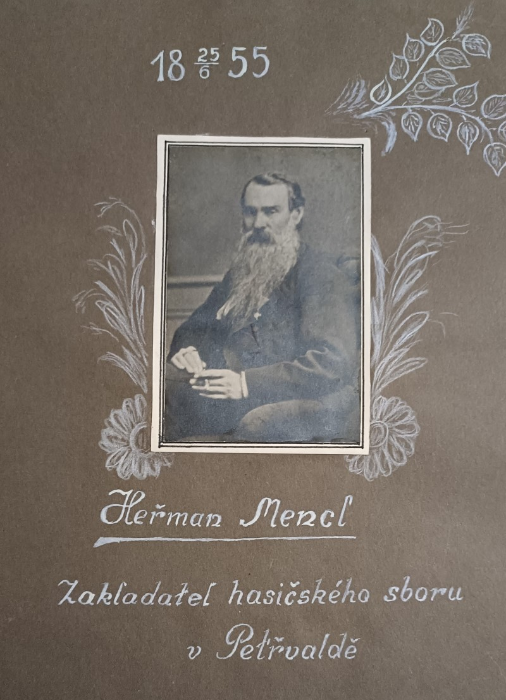
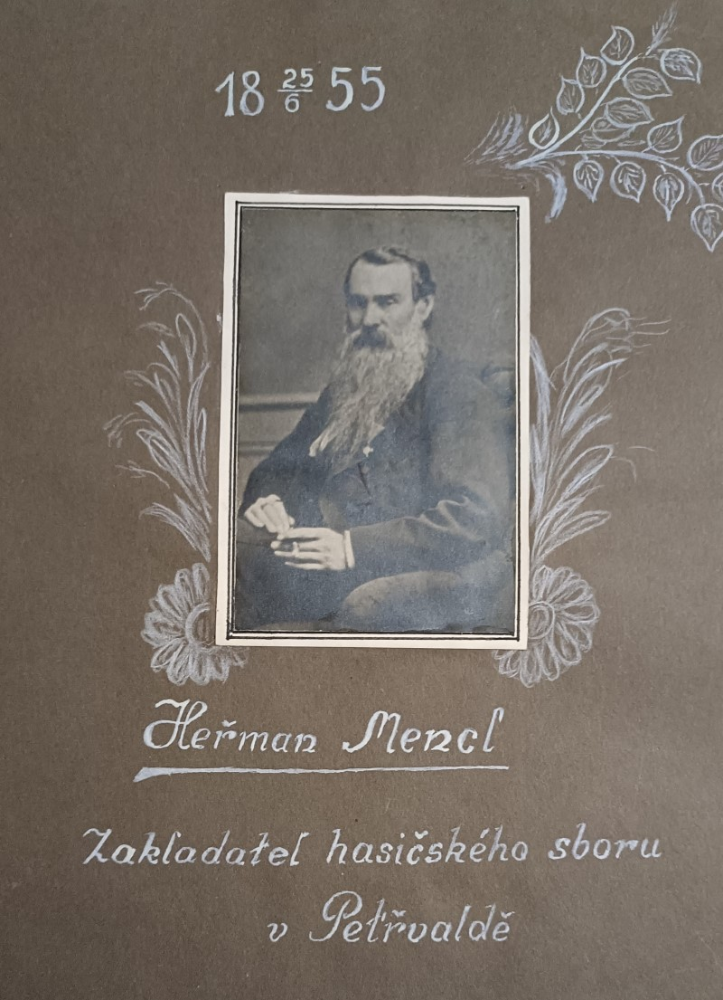

📋 Základní údaje o historickém objevu
Klíčové faktory:
- 📅 Datum založení: 26. května 1855
- 👤 Zakladatel: Herman Menzel
- 📍 Místo: Důl Evžen (později Pionýr), Petřvald
- 🎉 Oficiální oslavy: 21. června 2025 - 170. výročí
- 📷 Dokumentace: Fotografováno M. Heskem při oslavách
- 🏅 Historický význam: Nejstarší český dobrovolný hasičský sbor
🔍 Trojí potvrzení roku 1855
📜 1. Historické dokumenty
"V roce 1855 byl založen sbor původně jako dobrovolný hasičský a záchranářský sbor na dole Evžen později Pionýr. Zakladatelem Hermanem Menzlem"
Originální text z kroniky SDH Petřvald
📸 2. Fotografická dokumentace
👤 Herman Menzel - Zakladatel sboru
 

- Emblémy s letopočtem "1855"
- Jubilejní oslavy 1935 - "80 let"
- Kontinuální tradice v kronikách
- Více než 30 historických fotografií
🏛️ 3. Oficiální uznání 2025
- 21. června 2025: Oficiální oslavy 170. výročí
- Organizátoři: SDH Petřvald + město
- Matematika: 2025 - 170 = 1855 ✓
- Zdroj: Sdružení hasičů ČMS